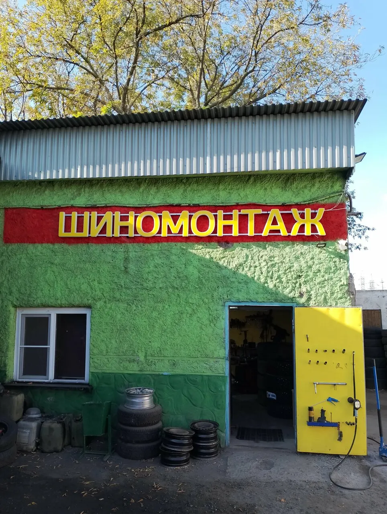
Шиномонтаж
Автошинмастер-про на улице Нижние Поля, 29, строение 17. Колёса, проколы и диски, каждый день с 10:00 до 20:00.
Найти просто: зелёное здание, красная вывеска, жёлтая дверь.
Зелёная стена, красная вывеска, жёлтая дверь
Мы стоим во дворе. От остановки «Улица Нижние Поля, 21» идти 229 метров, от метро Братиславская 1,4 км, от метро Марьино 1,6 км.
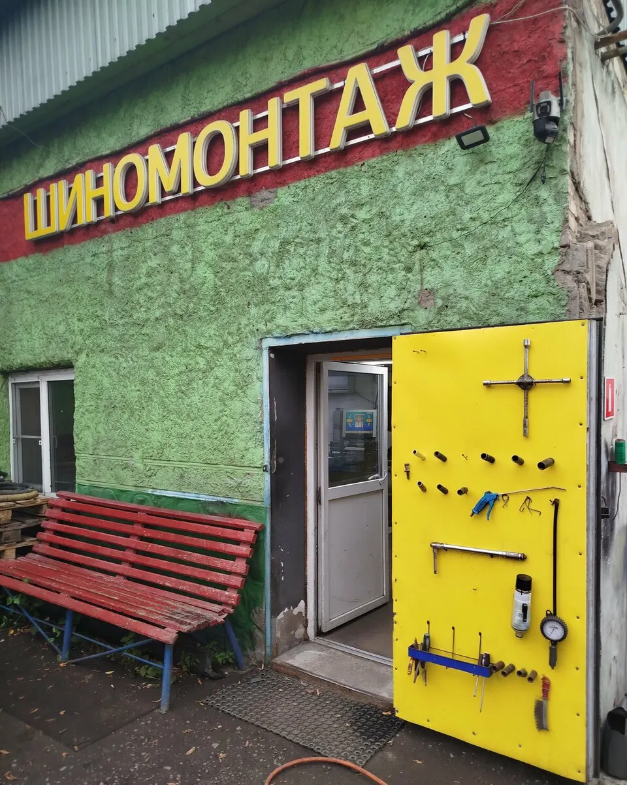
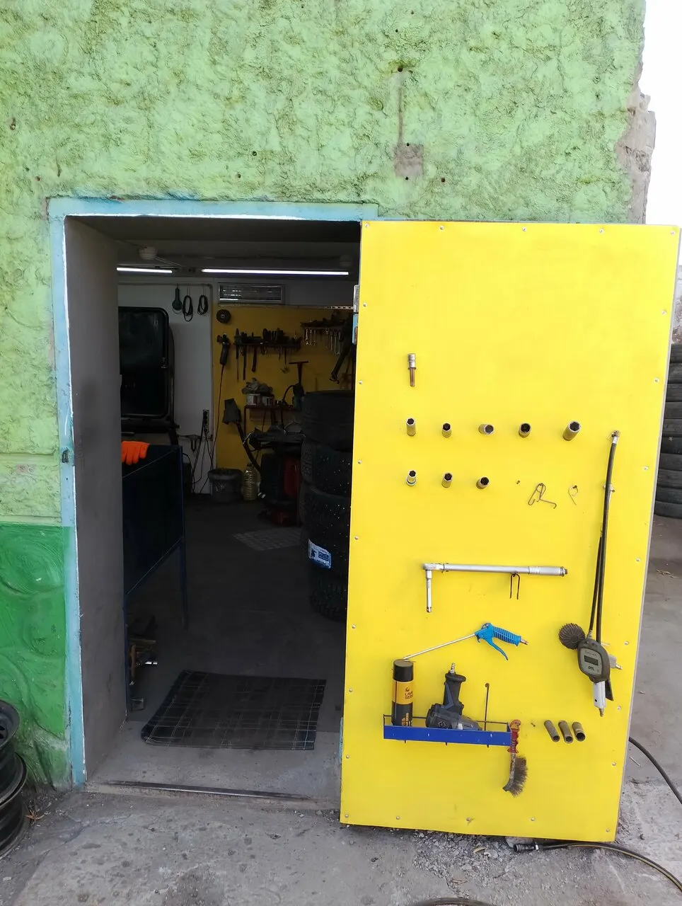
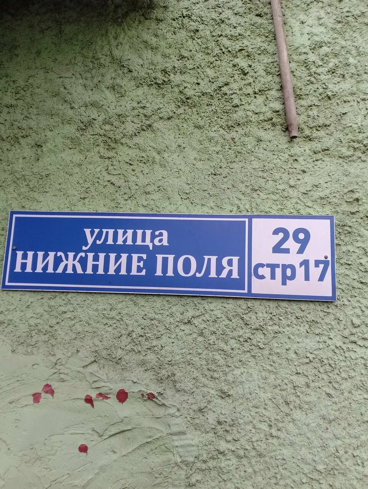
Снимите с двери то, что нужно
Отметьте работы на стенде, и соберётся готовое сообщение. Отправьте его в WhatsApp или Telegram: мастер ответит, когда можно подъехать.
Цены
3 000 ₽Шиномонтаж, 4 колеса
1 000–3 000 ₽Переобуть все колёса
Правка, прокатка, сварка, проточка, реставрация и покраска дисков: цену назовут по описанию или фото. Пришлите их в WhatsApp.
Цены с карточки на Яндекс Картах.
Как у нас внутри
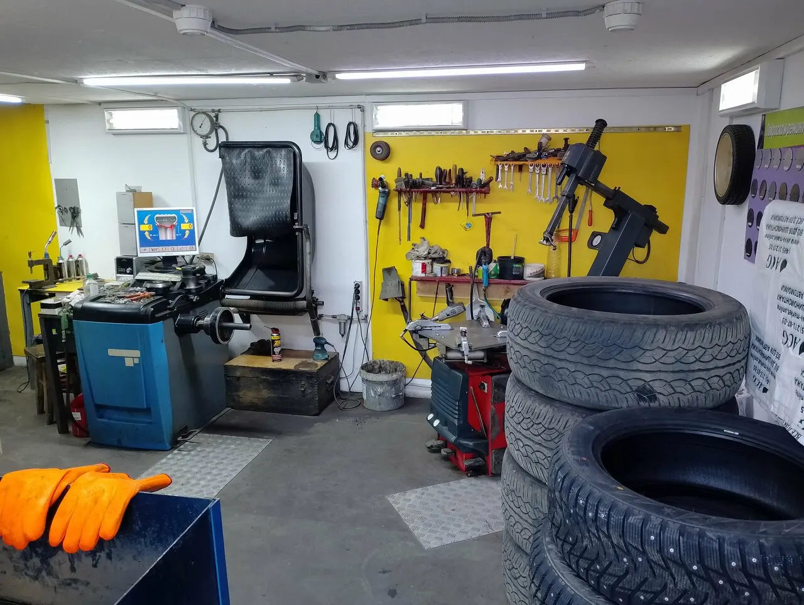
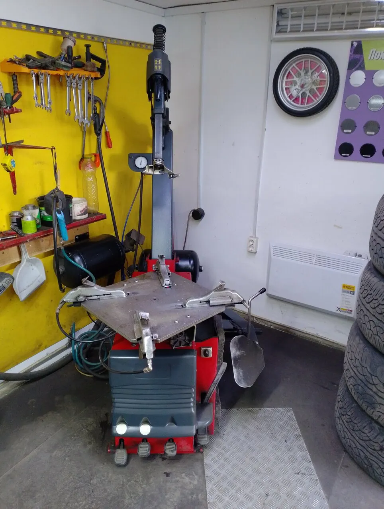
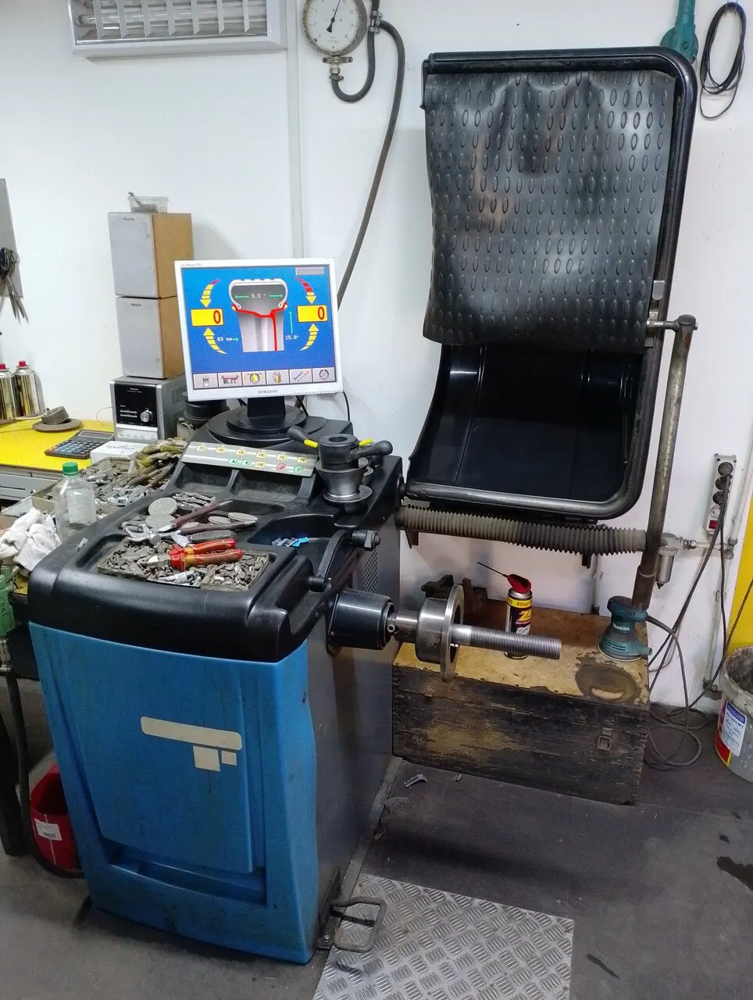
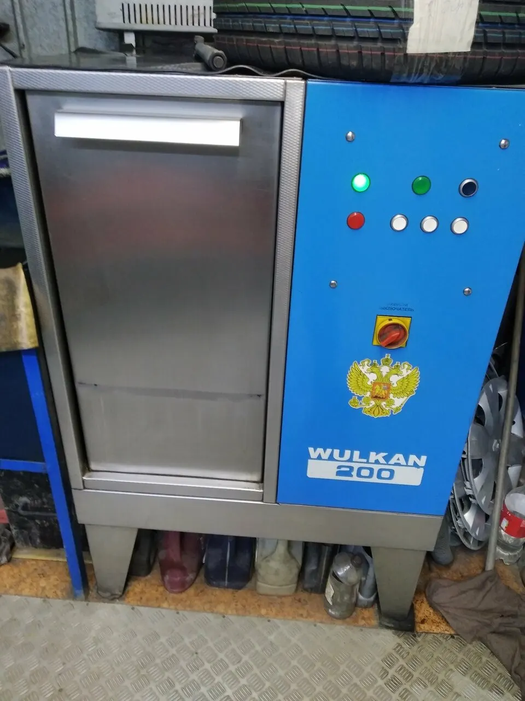
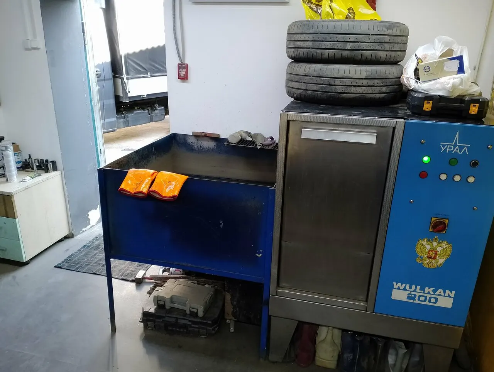
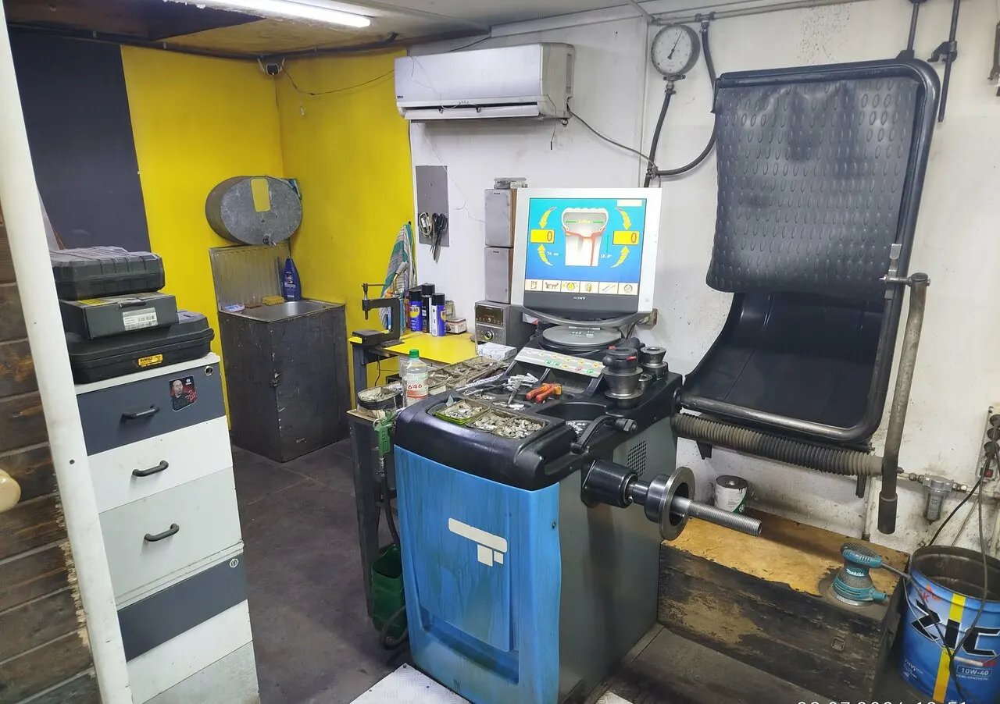
Диски: правка, сварка, покраска
В карточке указаны правка, прокатка, алмазная проточка, реставрация, покраска дисков и сварка аргоном. Если диск с трещиной или ударом, пришлите фото в WhatsApp и мастер скажет, что можно сделать.
«Заварили аргоном трещину на литье, хорошо залудили шов.»
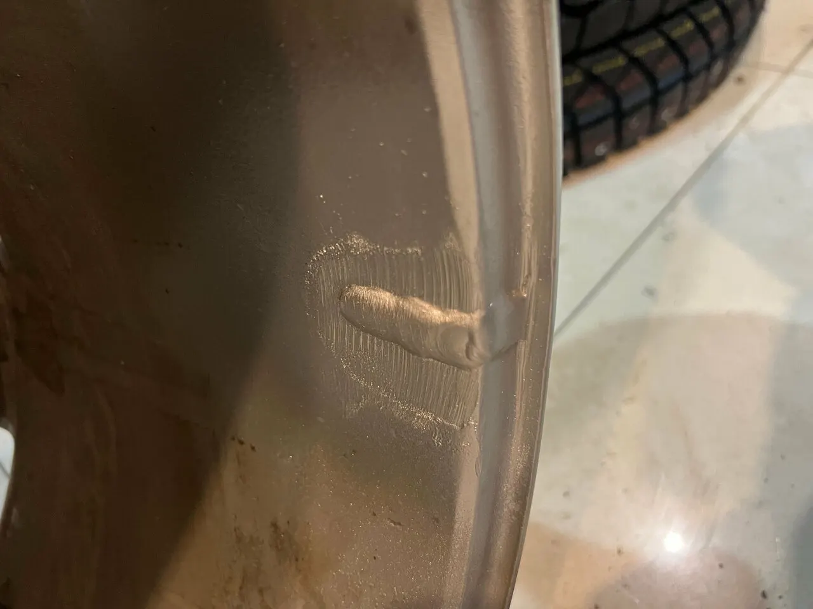
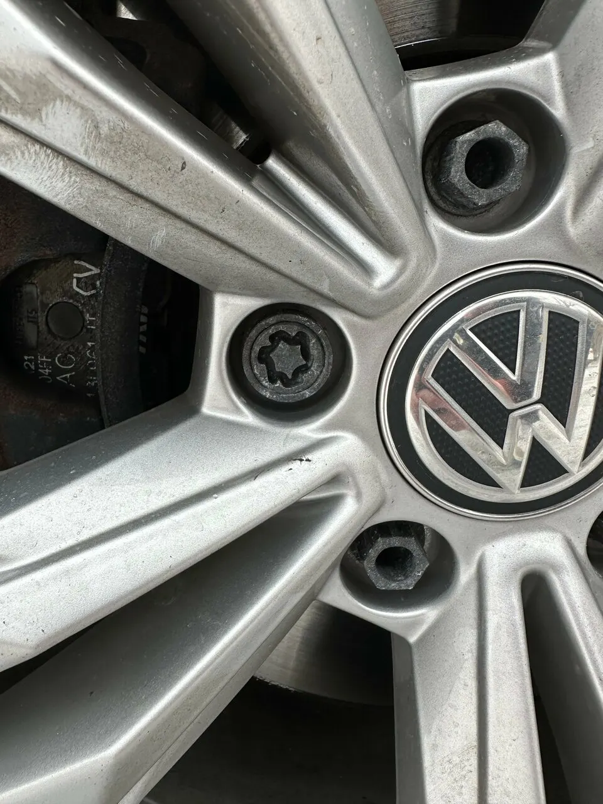
Что пишут на Яндекс Картах
- 4,9рейтинг
- 199оценок
- 117отзывов
- 100%хвалят время ожидания (52 отзыва)
«Спускало переднее колесо, медленно как-то, 0.5 бара за неделю. Приехал, быстро нашли прокол, залатали. На всё чуть меньше 20 минут. Рекомендую.»
«Заранее созваниваюсь с мастерами и подъезжаю что бы не стоять в больших очередях особенно в межсезонье!»
«Оперативно поменяли резину. Проверили состояние покрышек и отбалансировали колеса. Очередь небольшая и быстро движется.»
«Оперативно работают, по хорошим ценам, проконсультировали по телефону и быстро помогли разобрать с проблемой.»
«Пользуюсь услугами не первый год. Очень доброжелательный персонал. Оперативно поменяли колёса.»
Приезжайте или пишите
Нижние Поля 29стр 17
Каждый день с 10:00 до 20:00
- Оплатаналичными, картой, переводом, безналичный расчёт
- Гарантияесть, по данным карточки
- Ещёможно с собакой, есть Wi-Fi, вход доступен для колясок
Сайт собран по открытым данным карточки на Яндекс Картах.